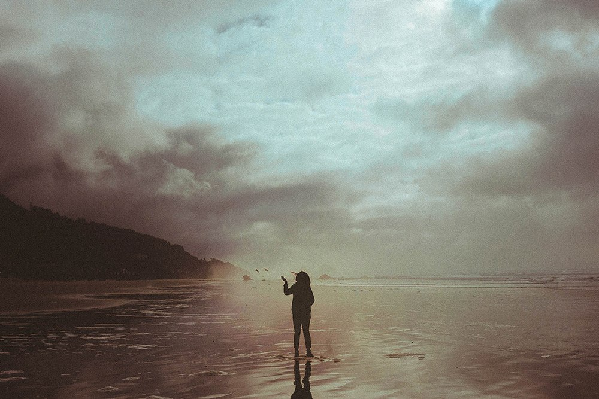

Сегодня технологии позволяют творить настоящие чудеса. Желаете, чтобы диван в вашей гостиной стоял на морском побережье, в ванной комнате обитали дельфины или на полу лежала огромная большая карта полушарий? Все эти возможности могут быть реализованы благодаря наливным 3d полам. По своей сути 3D наливной пол является многослойным покрытием, смонтированным под предпоследний прозрачный слой фотоизображением. Результатом этого становится безупречно ровное покрытие пола с эффектом 3d.
Наливные полы 3d прочны, устойчивы к истиранию, экологичны и, помимо того, нетребовательны в уборке. Бесспорным плюсом наливных полов является то, что в результате при обращении к высококвалифицированным дизайнерам и мастерам можно не только получить безупречно ровную поверхность, но и сделать весьма разнообразный и многочисленный дизайн. Дизайн данного вида полов зависит от фантазии заказчика и его денежных возможностей. Наливные полы 3D используются мировыми дизайнерами для создания ярких, красочных интерьеров.
Изюминка наливных 3D полов состоит в том, если на рисунок посмотреть с определенной точки, то возникает иллюзия объёмности изображения. Наливные 3d полы сделают ваш интерьер неповторимым и поистине сказочным, любоваться которым вы сможете долгие годы.
В последнее время актуальным стал вопрос устройства наливных полов в 3d. Что же собой представляют наливные полы с использованием 3D технологии? Давайте разберемся.
Некоторые при упоминании технологии 3D сразу представляют себе экран кинотеатра, 3D очки, или даже 3D телевизор, хотя ничего общего с этими вещами данная технология не имеет. За основу может быть взято творчество 3D художников, рисующие объемные изображения на всевозможных поверхностях. Суть данной технологии заключается в том, что при рассматривании рисунка под определённым углом, создается иллюзия объемности изображения.
Для производства наливных полов 3D применяется сложная технология, при которой требуется скрупулезная предварительная подготовка основания. Технологический процесс включает такие операции, как выравнивание полов, заливка нивелирными полами. После этого, наносятся три различных слоя для пола с нанесенным изображением, и далее все это заливается 1,5-2 мм слоем прозрачного эпоксидного состава, который выравнивается под влиянием силы тяжести. На высыхание поверхности требуется два-три дня. В качестве конечной поверхности используются полиуретановый лак. Технология 3D в наливных полах позволяет использовать тысячи цветов и даже создавать рисунок на полу в соответствии с Вашими пожеланиями. Наливные полы 3D видео, которых можно посмотреть ниже, очень надёжны и эстетичны. Наливные полы 3D помогут создать эксклюзивный и незабываемый интерьер в помещении любого типа.
Наливные полы 3d станут отличным решением в тех помещениях, где традиционные покрытия (линолеум, плитка, ламинат) по тем или иным причинам невозможно применить. Такие полы будут радовать глаз своей красотой, выдерживать нагрузки различной степени, надежно служить на протяжении долгих лет, не причинять вреда здоровью. Помимо того, наливные полы могут иметь и другие преимущества: антистатичность, (не собирать пыль), не быть восприимчивыми к высоким температурам. По области применения данный тип полов делится на промышленные и декоративные. От первых, как правило, требуются долговечность и прочность, а от вторых — красота и прочность. Технология 3D в наливных полах позволяет создавать наливной пол в любой цветовой гамме, при желании заказчика — с нанесением полноценного рисунка или узора. В рисунке 3d пола может быть использовано любое изображение: фотография, логотип компании, геометрические фигуры. Также при устройстве наливных полов может быть использованы камень, дерево или металл – они превосходно смотрятся в прозрачном полимере. Поскольку заливка пола является довольно сложным технологическим процессом, то работа мастеров будет стоить дороже, нежели сам материал. Стоимость наливного 3d пола от 8000 рублей, без рисунка от 4000 рублей.
Правильный выбор изображения для 3D пола является первой ступенью к созданию особого интерьера. Порой такой вид полов называют арт-объектами, так как они приковывают внимание посетителей развлекательных учреждений. Полы 3d фото, которых вы можете видеть в данной статье, изготавливаются с использованием эпоксидных смол с разной толщиной и степенью шероховатости. При выборе покрытия следует учесть условия эксплуатации: уровень влажности, температурный режим, интенсивность движения различных автотранспортных средств и пешеходов, состав и наличие агрессивных химических веществ.
Наливные полы 3D цена которых зависит от сложности рисунка, площади помещения, фирмы изготовителя, являются идеальным решением в отделке Вашего интерьера, а также Вашего гаража, офиса, бассейна. При правильном подборе для основы объемной фотографии выглядит он в одинаковой мере хорошо с любого ракурса. А если в процессе установки 3D пола добавить к изображению природные элементы, такие как песок, ракушки, каменные породы или иные фактурные материалы, то иллюзия пространства становится ещё реалистичнее. Помогают создать эффектные 3D полы фото с изображениями какого-либо пейзажа, воды, неба, животных, птиц. 3D полы помогут вам перенестись на красивое морское побережье, остров или цветущую лужайку. А уж ваши гости точно не останутся равнодушными к столь креативному подходу к дизайну интерьера. Посмотрев фото 3D полов на нашем сайте, вы сможете выбрать именно то, что вам нужно.